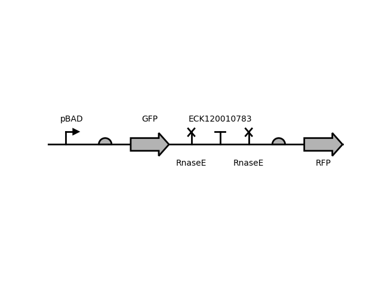
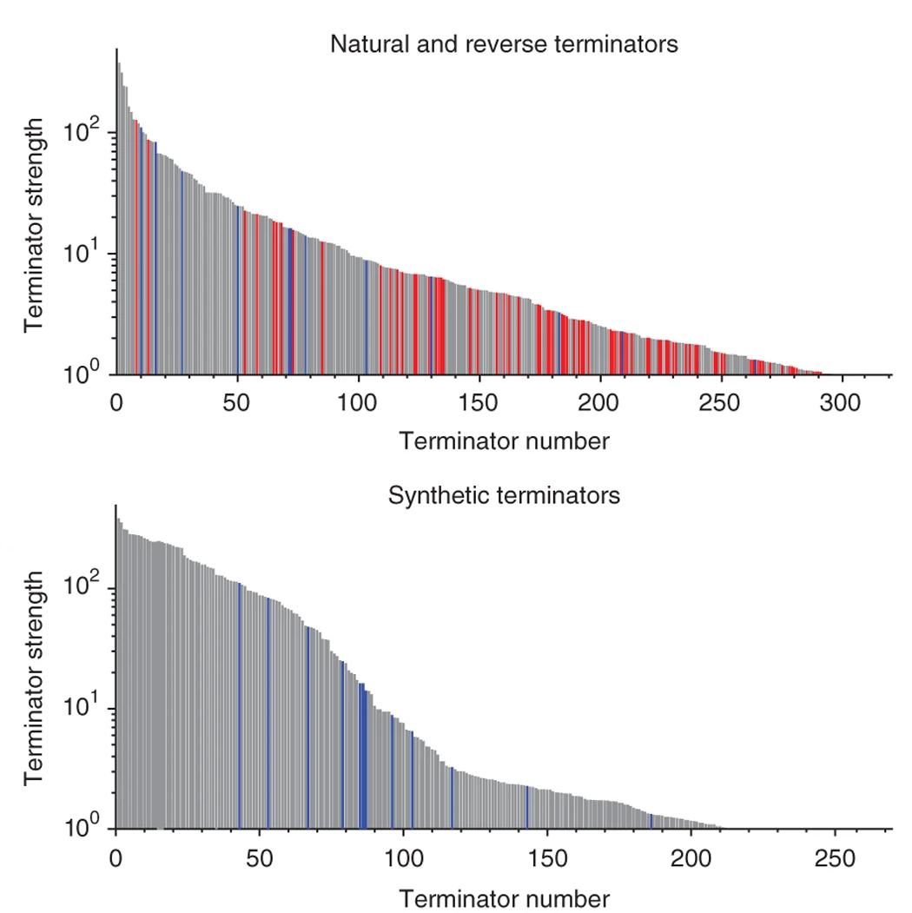

Natural Terminator
ECK120010783
Data
| Parameter | Value | Unit |
|---|---|---|
| Strength | 90.86 | - |
| Strain | DH5α |
|---|---|
| Plasmid | pSB1A10 |
| ori | ColE1 |
| Resistance | Amp |
Circuit Context
(better resolution)
Description
Part of a collection of 582 terminators characterized in a study by the Voigt Lab. The natural terminators were compiled from various sources, while the synthetic terminators were generated by combining different sequences for terminator stems, loops and downstream U-tracts. From the set of 582, we chose the best performing terminators along with weaker ones to allow more circuit possibilities. In general, a strength of 95% or more is considered sufficient to insulate circuits from their surrounding genetic context.
Characterization
Parts were characterized on E. coli DH5α in LB broth at 37 °C in 96-well flow citometer assays. Termination efficiency was calculated by measuring the fluorescence from reporters (RFP and GFP) coded both upstream and downstream of the terminator through flow citometry, and calculating the ratio of read-through insulated
(1 - downstream/upstream fluorescence). The authors originally did not use a percentile as a strength unit (they reported the inverse in order to emphasize the difference between very strong terminators), but we took the
liberty to convert their strength values to a format similar to other terminator collections.
RNAse E sites flanking the terminator were used to detach the coding sequences from each other and the terminator.
Sequences
Terminator
acgagccaatAAAAATACCGGCGTTATGCCGGTATTTTTttacgaaaga
Download
Reference
Chen, Y. J. et al. Characterization of 582 natural and synthetic terminators and quantification of their design constraints. Nat. Methods 10, 659–664 (2013).
https://doi.org/10.1038/nmeth.2515